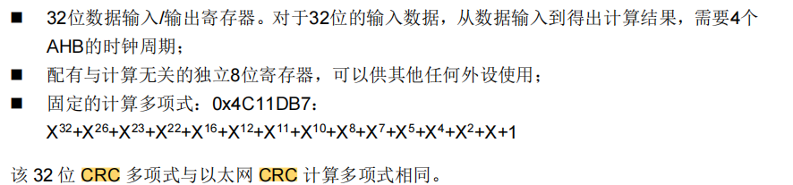
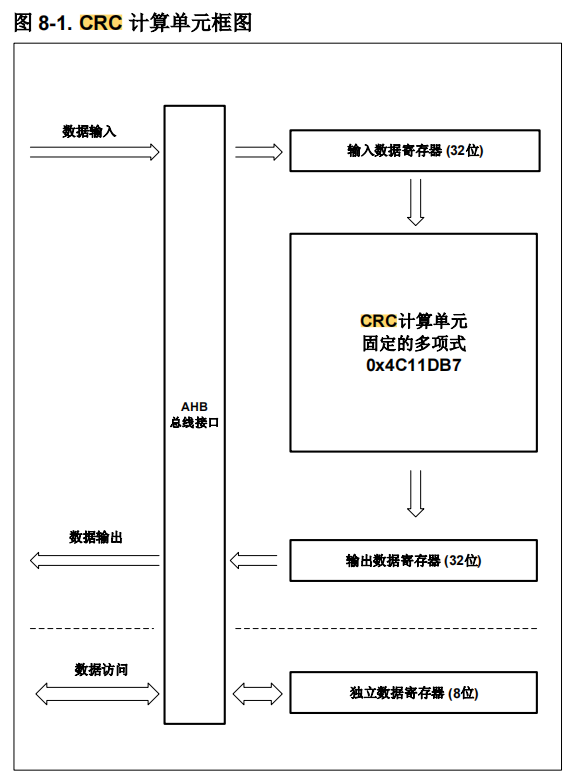
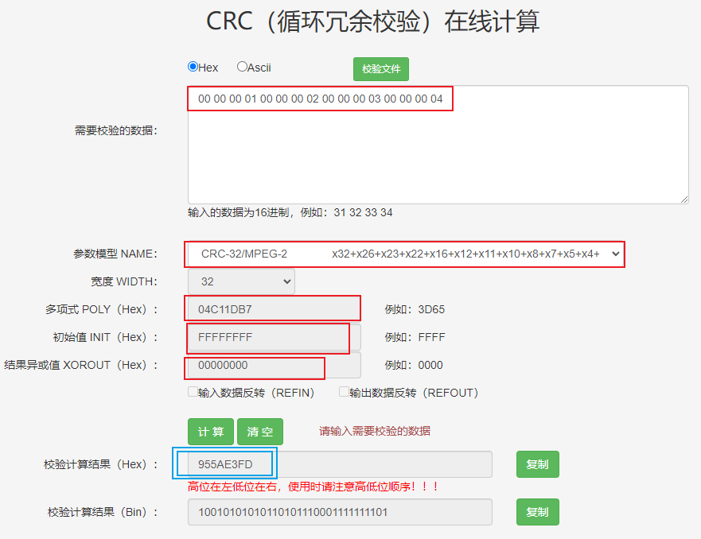
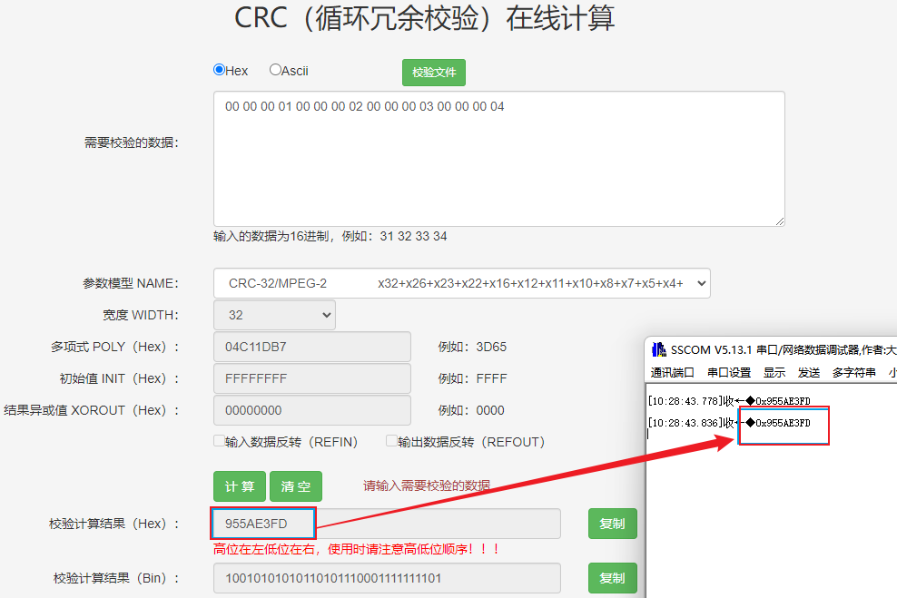
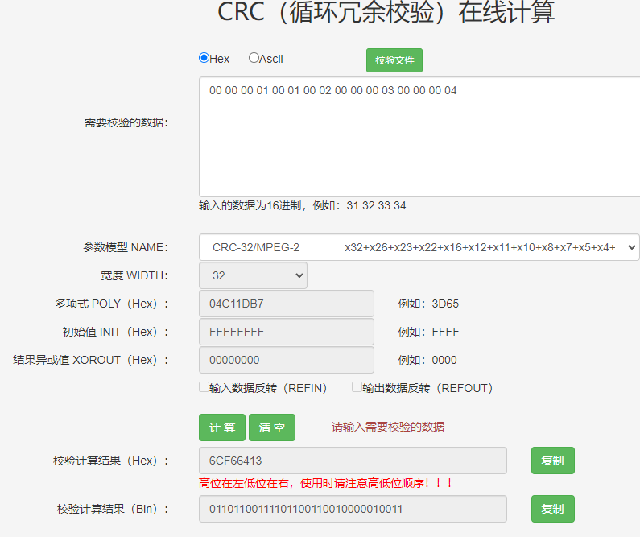
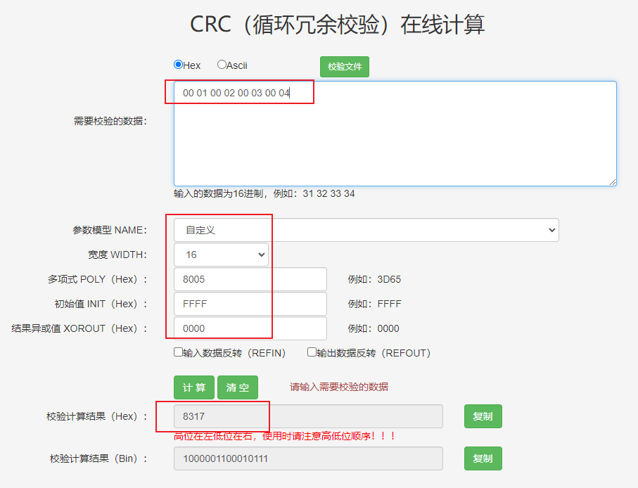
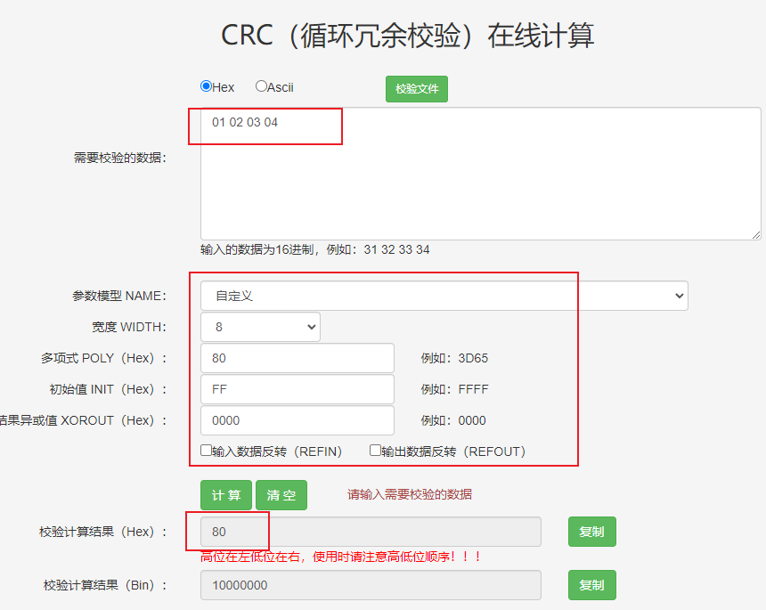

<!DOCTYPE lake>
<p data-lake-id="u94e87bb7" id="u94e87bb7"><br/></p><p data-lake-id="u513f8c02" id="u513f8c02"><br/></p><p data-lake-id="u4709c71b" id="u4709c71b"><br/></p><h2 data-lake-id="oelNa" id="oelNa"><span data-lake-id="u3f99ab6e" id="u3f99ab6e">CRC循环冗余校验</span></h2><p data-lake-id="ucfec655b" id="ucfec655b"><span class="lake-fontsize-12" data-lake-id="ufe8ac4e8" id="ufe8ac4e8" style="color: rgb(0,0,0)">循环冗余校验码是一种用在数字网络和存储设备上的差错校验码，可以校验原始数据的偶然差 </span></p><p data-lake-id="u791c8502" id="u791c8502"><span class="lake-fontsize-12" data-lake-id="u49429f60" id="u49429f60" style="color: rgb(0,0,0)">错。 </span></p><p data-lake-id="u7bc54f08" id="u7bc54f08"><span class="lake-fontsize-12" data-lake-id="u13aa4ce9" id="u13aa4ce9" style="color: rgb(0,0,0)">CRC 计算单元使用固定多项式计算 32 位 CRC 校验码。</span></p><p data-lake-id="u1838501a" id="u1838501a"><br/></p><p data-lake-id="u9a58f9fc" id="u9a58f9fc"><br/></p><h2 data-lake-id="aIjZd" data-lake-index-type="2" id="aIjZd"><span data-lake-id="u8a476d73" id="u8a476d73">硬件CRC</span></h2><p data-lake-id="u5e2c6476" id="u5e2c6476"><span class="lake-fontsize-12" data-lake-id="ubf62b2db" id="ubf62b2db">在单片机中，芯片具有专用的CRC计算单元，它是按照32位数据长度进行计算。 它相当于是我们的MCU有个小老弟，专门是干CRC计算的。</span></p><p data-lake-id="u69048ca0" id="u69048ca0"><br/></p><p data-lake-id="u19576e0b" id="u19576e0b"><span class="lake-fontsize-12" data-lake-id="ue19ce077" id="ue19ce077">主要特征</span></p><p data-lake-id="u207187c2" id="u207187c2"></p><h2 data-lake-id="OVoBF" id="OVoBF" style="text-align: center"></h2><h3 data-lake-id="CvHfG" data-lake-index-type="2" id="CvHfG"><span data-lake-id="u5e9415f6" id="u5e9415f6">在C代码计算CRC</span></h3><p data-lake-id="ua46bdf4f" id="ua46bdf4f"><span data-lake-id="u3cbe34b5" id="u3cbe34b5">下面我们在C代码中去使用CRC循环冗余校验码:</span></p><ol list="u15af7fcf"><li data-lake-id="u3b9218b3" fid="ud7cb8e0d" id="u3b9218b3"><span data-lake-id="udf56534d" id="udf56534d">在工程中导入gd32f4xx_crc.c文件</span></li><li data-lake-id="u6bf4f1d3" fid="ud7cb8e0d" id="u6bf4f1d3"><span data-lake-id="u78d452c0" id="u78d452c0">参考下面的示例代码，对数据进行计算</span></li></ol><span class="yuque-card-unsupported">[codeblock]</span><p data-lake-id="u08b4e571" id="u08b4e571"><br/></p><h3 data-lake-id="TTYQ5" data-lake-index-type="2" id="TTYQ5"><span data-lake-id="u0cc0a02d" id="u0cc0a02d">在线计算CRC</span></h3><p data-lake-id="u9078f5bf" id="u9078f5bf"><a class="yuque-card-link" href="http://www.ip33.com/crc.html" rel="noopener noreferrer" target="_blank">bookmarkInline：bookmarkInline</a></p><p data-lake-id="u09faa7a5" id="u09faa7a5"></p><h3 data-lake-id="gmk8c" data-lake-index-type="2" id="gmk8c"><span data-lake-id="u79885cb2" id="u79885cb2">比对二者结果</span></h3><p data-lake-id="u72f58872" id="u72f58872"><span data-lake-id="u4a2b0e72" id="u4a2b0e72">通过下图，我们可以看到两端所计算的结果是相同的，说明数据在通讯的过程中，数据是正确的。</span></p><p data-lake-id="u4d2f4730" id="u4d2f4730"></p><p data-lake-id="u60a5421d" id="u60a5421d"><br/></p><p data-lake-id="u483d1937" id="u483d1937"><span data-lake-id="ued4ebe61" id="ued4ebe61">如果通讯的过程中，数据传错了，哪怕是错一位，最终计算出来的结果都是不一致的。</span></p><p data-lake-id="u7412bd12" id="u7412bd12"><strong><span data-lake-id="ud779a7f1" id="ud779a7f1" style="color: #DF2A3F">请问下图，我错在哪？</span></strong></p><p data-lake-id="u6d0f80e6" id="u6d0f80e6"></p><p data-lake-id="u2240a524" id="u2240a524"><br/></p><p data-lake-id="u4922ec43" id="u4922ec43"><br/></p><h2 data-lake-id="m0oKo" data-lake-index-type="2" id="m0oKo"><span data-lake-id="ud684c830" id="ud684c830">软件CRC</span></h2><p data-lake-id="u368e1e49" id="u368e1e49"><span data-lake-id="ue8170cab" id="ue8170cab">在上面的案例中，我们是将数据传输给硬件计算单元去计算，但是芯片默认只支持32位的结果输出。但是在日常开发中，我们使用16位或者8位的情况非常多，所以我们无法直接使用硬件CRC，这个时候，咱们就得使用软件CRC自己来计算。</span></p><p data-lake-id="ue90819be" id="ue90819be"><span data-lake-id="ufb155507" id="ufb155507">​</span><br/></p><p data-lake-id="u7d18a295" id="u7d18a295"><span data-lake-id="u8b7a2ea3" id="u8b7a2ea3">好的,我来简单地描述一下如何在软件中实现CRC(循环冗余校验)的步骤:</span></p><p data-lake-id="u983f775c" id="u983f775c"><span data-lake-id="u2873a2df" id="u2873a2df">​</span><br/></p><p data-lake-id="u96d1e15d" id="u96d1e15d"><span data-lake-id="ubf1822d8" id="ubf1822d8">选择多项式生成器: 首先需要确定使用哪种CRC多项式作为生成器。常见的有CRC-16、CRC-32等多种选择,需要根据实际需求选择合适的生成器。</span></p><p data-lake-id="uaab7856d" id="uaab7856d"><span data-lake-id="ud16edf16" id="ud16edf16">​</span><br/></p><p data-lake-id="u4cf38c5c" id="u4cf38c5c"><span data-lake-id="uf4c015c8" id="uf4c015c8">例如在我们硬件CRC，芯片内部默认使用的多项式生成器是 </span><span class="lake-fontsize-12" data-lake-id="u6679655d" id="u6679655d" style="color: #DF2A3F">0x4C11DB7</span></p><p data-lake-id="uf75fd916" id="uf75fd916"><br/></p><p data-lake-id="ucfe27f5c" id="ucfe27f5c"><span data-lake-id="ude03990c" id="ude03990c">对每个输入数据位执行以下步骤:</span></p><p data-lake-id="u70f9df62" id="u70f9df62"><span data-lake-id="u006f9155" id="u006f9155">​</span><br/></p><p data-lake-id="u00efa3cc" id="u00efa3cc"><span data-lake-id="uadda2fc9" id="uadda2fc9">a. 取一个字节数据，将字节左移到最高处</span></p><p data-lake-id="u7c22abc1" id="u7c22abc1"><span data-lake-id="u0996c9cc" id="u0996c9cc">b. 将左移之后的数据和</span><span data-lake-id="u63f7d627" id="u63f7d627" style="color: #DF2A3F">初值</span><span data-lake-id="u34bdf9f7" id="u34bdf9f7">进行异或处理，将结果作为</span><span data-lake-id="u13b02ca4" id="u13b02ca4" style="color: #DF2A3F">新初值</span></p><p data-lake-id="ua3ee2732" id="ua3ee2732"><span data-lake-id="u4d0573d4" id="u4d0573d4">c. 处理新初值每一位, 判断最高位是否是1：</span></p><ol list="u9b90d9b9"><li data-lake-id="u0a5f8e03" fid="u0dba9b43" id="u0a5f8e03"><span data-lake-id="u9ee668ac" id="u9ee668ac">如果是1，则新初值左移1位后和</span><span data-lake-id="u93c618e3" id="u93c618e3" style="color: #DF2A3F">多项式</span><span data-lake-id="u55a9920d" id="u55a9920d">进行异或，将结果设置为</span><span data-lake-id="uf5a62ddb" id="uf5a62ddb" style="color: #DF2A3F">新初值</span></li><li data-lake-id="u69b2625e" fid="u0dba9b43" id="u69b2625e"><span data-lake-id="uac8f4adf" id="uac8f4adf">如果是0，仅左移。</span></li></ol><p data-lake-id="u33e2c578" id="u33e2c578"><br/></p><p data-lake-id="u56685b03" id="u56685b03"><span data-lake-id="ube61861f" id="ube61861f">重复步骤3,直到所有输入数据位都处理完毕。</span></p><p data-lake-id="ua22c96a9" id="ua22c96a9"><span data-lake-id="uf42fd787" id="uf42fd787">​</span><br/></p><p data-lake-id="uada065f2" id="uada065f2"><span data-lake-id="u7a16de88" id="u7a16de88">输出结果: 此时出书的就是最终的CRC校验码。</span></p><p data-lake-id="u547f0ee0" id="u547f0ee0"><span data-lake-id="u18a52e8d" id="u18a52e8d">​</span><br/></p><p data-lake-id="u933c2823" id="u933c2823"><span data-lake-id="uc29ba596" id="uc29ba596" style="color: #DF2A3F">通常，我们进行数据的传输都是使用字节进行传输的，所以在以下的案例中，我们的数据都是按照1字节的方式进行计算</span></p><h3 data-lake-id="zkzo0" data-lake-index-type="2" id="zkzo0"><span data-lake-id="uf6f9b521" id="uf6f9b521">32位CRC</span></h3><p data-lake-id="u0ff158b0" id="u0ff158b0"><br/></p><span class="yuque-card-unsupported">[codeblock]</span><p data-lake-id="ue782298d" id="ue782298d"><br/></p><span class="yuque-card-unsupported">[codeblock]</span><p data-lake-id="u5fece68c" id="u5fece68c"><br/></p><h3 data-lake-id="nXh8v" data-lake-index-type="2" id="nXh8v"><span data-lake-id="u48e24db6" id="u48e24db6">16位CRC</span></h3><p data-lake-id="u1b14dd7b" id="u1b14dd7b"><br/></p><span class="yuque-card-unsupported">[codeblock]</span><p data-lake-id="u742b7b24" id="u742b7b24"><br/></p><p data-lake-id="u18ba1567" id="u18ba1567"><span data-lake-id="u1ee21aec" id="u1ee21aec">测试代码</span></p><span class="yuque-card-unsupported">[codeblock]</span><p data-lake-id="u5cdd516f" id="u5cdd516f"><span data-lake-id="u1a7067ea" id="u1a7067ea">执行代码，查看代码运行结果是否和网页计算一致</span></p><p data-lake-id="ufa57ee04" id="ufa57ee04"></p><p data-lake-id="ua798fa35" id="ua798fa35"><br/></p><p data-lake-id="u117864e5" id="u117864e5"><br/></p><h3 data-lake-id="x7FKj" data-lake-index-type="2" id="x7FKj"><span data-lake-id="uf8d4e51c" id="uf8d4e51c">8位CRC</span></h3><p data-lake-id="ud32c1be4" id="ud32c1be4"><span data-lake-id="u93bae9a7" id="u93bae9a7">​</span><br/></p><span class="yuque-card-unsupported">[codeblock]</span><span class="yuque-card-unsupported">[codeblock]</span><p data-lake-id="ueaa72e9e" id="ueaa72e9e"><span data-lake-id="u30a63823" id="u30a63823">在网页中查看执行结果,比对与程序执行输出的结果是否一致</span></p><p data-lake-id="uc7de25b3" id="uc7de25b3"></p><p data-lake-id="ua623186c" id="ua623186c"><br/></p><p data-lake-id="ub62c06d2" id="ub62c06d2"><br/></p><h2 data-lake-id="nsz9R" data-lake-index-type="2" id="nsz9R"><span data-lake-id="u3a97bb1d" id="u3a97bb1d">模拟数据传输</span></h2><p data-lake-id="u9add9f24" id="u9add9f24"><span data-lake-id="ubcbce24a" id="ubcbce24a">在该案例中，我们使用单片机作为发送端，使用python客户端作为接收端。</span></p><ol list="u624c9a64"><li data-lake-id="u1bfe09a4" fid="u38066781" id="u1bfe09a4"><span data-lake-id="ucedf4292" id="ucedf4292">在单片机端， 我们先对数据计算一个CRC校验码</span></li><li data-lake-id="u2dc6f5c4" fid="u38066781" id="u2dc6f5c4"><span data-lake-id="u25fe740e" id="u25fe740e">在接收端，我们</span><span data-lake-id="u201b6bee" id="u201b6bee" style="color: #DF2A3F">重新对数据计算一个CRC校验码</span></li><li data-lake-id="u616fcee4" fid="u38066781" id="u616fcee4"><span data-lake-id="u55850515" id="u55850515">比对</span><span data-lake-id="u486103c0" id="u486103c0" style="color: #DF2A3F">收到的校验码</span><span data-lake-id="ue163a87b" id="ue163a87b">和</span><span data-lake-id="u5294dc0c" id="u5294dc0c" style="color: #DF2A3F">自己计算出来的校验码</span></li></ol><ol data-lake-indent="1" list="u624c9a64"><li data-lake-id="ub118f233" fid="u38066781" id="ub118f233"><span data-lake-id="u93f1bcbb" id="u93f1bcbb">若相同，则数据校验成功</span></li><li data-lake-id="ua57a0cfa" fid="u38066781" id="ua57a0cfa"><span data-lake-id="u70dafdd8" id="u70dafdd8">若不同，则数据校验失败</span></li></ol><h3 data-lake-id="dGmYu" data-lake-index-type="2" id="dGmYu"><span data-lake-id="u3737117d" id="u3737117d">在python中实现CRC8</span></h3><p data-lake-id="u1b07f5e2" id="u1b07f5e2"><span data-lake-id="uc33597cf" id="uc33597cf">按照前面的步骤，我们将CRC算法在python中实现一遍</span></p><span class="yuque-card-unsupported">[codeblock]</span><p data-lake-id="ua9d76649" id="ua9d76649"><br/></p><h3 data-lake-id="BVoM4" data-lake-index-type="2" id="BVoM4"><span data-lake-id="ue0066bd0" id="ue0066bd0">单片发出数据</span></h3><p data-lake-id="uf138f808" id="uf138f808"><span data-lake-id="u527dd9e4" id="u527dd9e4">在单片机中，我们循环的去发送数据</span></p><span class="yuque-card-unsupported">[codeblock]</span><p data-lake-id="u8f4a3529" id="u8f4a3529"><br/></p><h3 data-lake-id="Ox4mk" data-lake-index-type="2" id="Ox4mk"><span data-lake-id="u3cf5823f" id="u3cf5823f">python接收数据</span></h3><p data-lake-id="u9852b8e4" id="u9852b8e4"><br/></p><p data-lake-id="u52fb1e85" id="u52fb1e85"><span data-lake-id="u258f07e0" id="u258f07e0">在python客户端中，我们要干如下几件事：</span></p><ol list="u4923571b"><li data-lake-id="u37f3e0c4" fid="uaef1fcde" id="u37f3e0c4"><span data-lake-id="ub8de48d8" id="ub8de48d8">接收到客户端数据</span></li><li data-lake-id="ub7544ac5" fid="uaef1fcde" id="ub7544ac5"><span data-lake-id="u97177ce8" id="u97177ce8">将数据转成字节数组</span></li><li data-lake-id="uf69a8b00" fid="uaef1fcde" id="uf69a8b00"><span data-lake-id="u27b6587c" id="u27b6587c">从字节数组中拆分出数据部分和校验码部分</span></li><li data-lake-id="u74f090e2" fid="uaef1fcde" id="u74f090e2"><span data-lake-id="u85ce0f2f" id="u85ce0f2f">使用crc校验算法，对数据部分重新计算校验码</span></li><li data-lake-id="u2247a812" fid="uaef1fcde" id="u2247a812"><span data-lake-id="u1d0c064c" id="u1d0c064c">比对</span><span data-lake-id="u97323746" id="u97323746" style="color: #DF2A3F">计算出来的校验码</span><span data-lake-id="u13efcaa5" id="u13efcaa5">和</span><span data-lake-id="u0023c682" id="u0023c682" style="color: #DF2A3F">接收到的校验码</span></li></ol><ol data-lake-indent="1" list="u4923571b"><li data-lake-id="ufa52caef" fid="uaef1fcde" id="ufa52caef"><span data-lake-id="u4af9612f" id="u4af9612f">若相同，则校验成功</span></li><li data-lake-id="u2980f148" fid="uaef1fcde" id="u2980f148"><span data-lake-id="u547bbd4a" id="u547bbd4a">若不同，则校验失败，该条数据就是辣鸡</span></li></ol><span class="yuque-card-unsupported">[codeblock]</span>